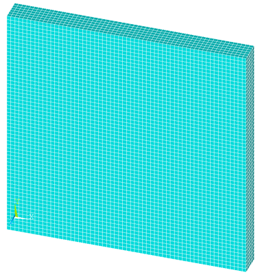
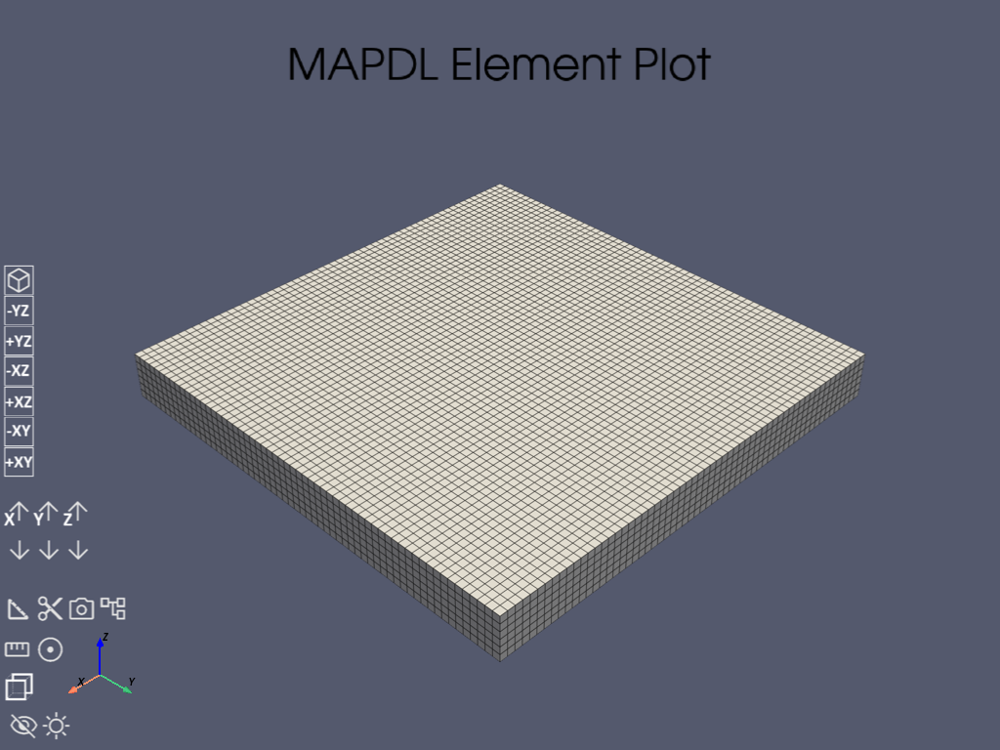

Note
Go to the end to download the full example code.
Sound diffusion in a flat room#
- Problem description:
Sound diffusion is modeled in a flat room of size 30 x 30 x 3 \(m^3\). A sound source is placed at (2,2,1) with a sound power level of \(1 \cdot 10^-2 W\). The wall absorption coefficient is equal to 0.1. The coefficient of atmospheric attenuation is \(0.01 m^-1\).
- Reference:
A.BILLON,J.PICAUT,’INTRODUCING ATMOSPHERIC ATTENUATION WITHIN A DIFFUSION MODEL FOR ROOM-ACOUSTIC PREDICTIONS MARCH 2008.
- Analysis type(s):
Static analysis
ANTYPE=0
- Element type(s):
3D 20-Node Acoustic Solid (FLUID220)
{kind=link}

- Material properties:
Speed of sound, \(c_0 = 343 m/s\)
Density, \(\rho = 1.21 kg/m^3\)
Wall absorption coefficient, \(\alpha = 0.1\)
Atmospheric attenuation coefficient attn. = \(0.01 m^-1\)
- Geometric properties:
Room length = \(30 m\)
Room width = \(30 m\)
Room height = \(3 m\)
- Loading:
Sound power source = \(1 \cdot 10^{-2} W\)
- Analysis assumptions and modeling notes:
Steady analysis is performed to determine the sound pressure level inside the room. In the post-processing, the sound pressure level (SPL) is listed every 2 m along a line passing through the room center at 1 m high. The sound pressure level is calculated in Mechanical APDL as:
\(SPL = 10 \times \log_{10} \times \frac{\rho \times c_0^2 \times w}{P_{ref}^2}\)
where w is diffuse sound energy and reference pressure \(P_{ref} = 2 \times 10^{-5}\).
# sphinx_gallery_thumbnail_path = '_static/vm299_setup.png'
import math
# Importing the `launch_mapdl` function from the `ansys.mapdl.core` module
from ansys.mapdl.core import launch_mapdl
import numpy as np
# Launch MAPDL with specified options
mapdl = launch_mapdl(loglevel="WARNING", print_com=True, remove_temp_dir_on_exit=True)
# Clear the current database
mapdl.clear()
# Run the FINISH command to exists normally from a processor
mapdl.finish()
# Set the ANSYS version
mapdl.com("ANSYS MEDIA REL. 2022R2 (05/13/2022) REF. VERIF. MANUAL: REL. 2022R2")
# Run the '/VERIFY' command for VM299
mapdl.run("/VERIFY,VM299")
# Set the title of the analysis
mapdl.title("VM299 SOUND PRESSURE LEVEL IN A FLAT ROOM")
# Entering the PREP7 environment in MAPDL
mapdl.prep7()
# It is not recommended to use '/NOPR' in a normal PyMAPDL session.
mapdl._run("/NOPR")
# Constant value of PI
pi = math.pi
# Set parameters for ROOM SIZE
LX = 30
LY = 30
LZ = 3
VOL = LX * LY * LZ
SURF = 2 * (LX * LY + LY * LZ + LX * LZ)
MFP = 4 * VOL / SURF
# Set parameters for MATERIAL PROPERTIES
C0 = 343
RHO = 1.21
ROOMD = MFP * C0 / 3
ATTN_Val = 0.01
ROOMDP = ROOMD / (1.0 + ATTN_Val * MFP)
ALPHA = 0.1
WS = 1.0e-2
/COM,ANSYS MEDIA REL. 2022R2 (05/13/2022) REF. VERIF. MANUAL: REL. 2022R2
Define material#
Set up the material and its type (a single material), density, speed of sound wall absorption coefficient and Atmospheric attenuation coefficient is specified.
Define geometry#
Set up the nodes and elements. This creates a mesh just like in the problem setup.
H = 0.5
a = np.array([0, 2.0, LX])
b = np.array([0, 2.0, LY])
c = np.array([0, 2.0, LZ])
for i in range(2):
for j in range(2):
for k in range(2):
mapdl.block(a[i], a[i + 1], b[j], b[j + 1], c[k], c[k + 1])
# mapdl.aplot()
# Generates new volumes by “gluing” volumes.
mapdl.vglue("ALL")
# Define element, 3-D Acoustic Fluid 20-Node Solid Element
mapdl.et(1, 220, 3, 4)
mapdl.type(1) # set element type, Type=1
mapdl.mat(1) # set material type, MAT=1
mapdl.esize(H) # Specifies the element size.
# Generates nodes and volume elements within volumes.
mapdl.vmesh(9, 15, 1)
# For elements that support multiple shapes, specifies the element shape, set mshape=3D
mapdl.mshape(0, "3D")
# Generates nodes and volume elements within volumes.
mapdl.vmesh(1)
# select nodes of specified location
mapdl.nsel("S", "LOC", "X", 0)
mapdl.nsel("A", "LOC", "X", LX)
mapdl.nsel("A", "LOC", "Y", 0)
mapdl.nsel("A", "LOC", "Y", LY)
mapdl.nsel("A", "LOC", "Z", 0)
mapdl.nsel("A", "LOC", "Z", LZ)
array([ 1, 2, 3, ..., 99476, 99477, 99478],
shape=(25922,), dtype=int32)
Define boundary conditions#
Define Absorption coefficient and transmission loss.Define Mass source; mass source rate; or power source in an energy diffusion solution for room acoustics. Then exit prep7 processor.
Effectiely, this sets: - Sound power source = \(1 \cdot 10^{-2} W\)
mapdl.sf("ALL", "ATTN", ALPHA)
# Selects all entities
mapdl.allsel()
# select nodes of specified location
mapdl.nsel("S", "LOC", "X", a[1])
mapdl.nsel("R", "LOC", "Y", b[1])
mapdl.nsel("R", "LOC", "Z", c[1])
mapdl.bf("ALL", "MASS", WS)
# Selects all entities
mapdl.allsel()
mapdl.eplot()
# Finish pre-processing processor
mapdl.finish()

[84, 89, 109]
***** ROUTINE COMPLETED ***** CP = 0.000
Solve#
Enter solution mode and solve the system.
mapdl.slashsolu()
# SOLVE STATIC ANALYSIS
mapdl.solve()
# exists solution processor
mapdl.finish()
FINISH SOLUTION PROCESSING
***** ROUTINE COMPLETED ***** CP = 0.000
Post-processing#
Enter post-processing and read results set
mapdl.post1()
# Set the current results set to the last set to be read from result file
mapdl.set("LAST")
# Defines a path name and establishes parameters for the path
mapdl.path("X_SPL", 2, "", 15)
mapdl.ppath(1, "NODE", 0, 15, 1)
mapdl.ppath(2, "NODE", 30, 15, 1)
# Interpolates an item onto a path.
mapdl.pdef("UX", "U", "X", "NOAV")
mapdl.pdef("SPLX", "SPL", "", "NOAV")
# redirects output to the default system output file
mapdl.run("/OUT")
# Prints path items along a geometry path.
mapdl.prpath("UX", "SPLX")
# redirects solver output to a file named "SCRATCH"
mapdl.run("/OUT,SCRATCH")
# Sets various line graph display options
# DIVX: Determines the number of divisions (grid markers) that will be plotted on the X
mapdl.gropt("DIVX", 15)
# Specifies a linear ordinate (Y) scale range.
mapdl.yrange(71, 82)
# DIVY: Determines the number of divisions (grid markers) that will be plotted on the Y
mapdl.gropt("DIVY", 11)
# Specifies the device and other parameters for graphics displays.
# Creates PNG (Portable Network Graphics) files that are named Jobnamennn.png
mapdl.show("PNG", "rev")
mapdl.plpath("UX", "SPLX") # Displays path items on a graph.
mapdl.show("CLOSE") # This option purges the graphics file buffer.
Inline functions in PyMAPDL to query node#
Post-processing: Compute sound pressure level (SPL)#
en_1 = mapdl.get("EN_1", "NODE", n1, "ENKE")
en_2 = mapdl.get("EN_2", "NODE", n2, "ENKE")
en_3 = mapdl.get("EN_3", "NODE", n3, "ENKE")
en_4 = mapdl.get("EN_4", "NODE", n4, "ENKE")
en_5 = mapdl.get("EN_5", "NODE", n5, "ENKE")
PREF = 2e-5
x1 = (RHO * en_1 * C0**2) / PREF**2
x2 = (RHO * en_2 * C0**2) / PREF**2
x3 = (RHO * en_3 * C0**2) / PREF**2
x4 = (RHO * en_4 * C0**2) / PREF**2
x5 = (RHO * en_5 * C0**2) / PREF**2
SPL_1 = 10 * (math.log10(x1))
SPL_2 = 10 * (math.log10(x2))
SPL_3 = 10 * (math.log10(x3))
SPL_4 = 10 * (math.log10(x4))
SPL_5 = 10 * (math.log10(x5))
# Fill the target result values in array
target_ref = np.array([80.0, 79.0, 77.5, 76.0, 74.5])
# Fill the simulated result values in array
value = np.array([SPL_1, SPL_2, SPL_3, SPL_4, SPL_5])
# store ratio
value_ratio = []
for i in range(len(target_ref)):
a = value[i] / target_ref[i]
value_ratio.append(a)
# assign labels position in meter
label = np.array([5, 10, 15, 20, 25])
Verify the results#
message = f"""
------------------- VM299 RESULTS COMPARISON ---------------------
SPL at Position, X(m) | TARGET | Mechanical APDL | RATIO
-----------------------------------------------------------------
"""
print(message)
for i in range(len(target_ref)):
message = f"""
{label[i]:.5f} {target_ref[i]:.5f} {value[i]:.5f} {value_ratio[i]:.5f}
"""
print(message)
message = f"""
-----------------------------------------------------------------
"""
print(message)
------------------- VM299 RESULTS COMPARISON ---------------------
SPL at Position, X(m) | TARGET | Mechanical APDL | RATIO
-----------------------------------------------------------------
5.00000 80.00000 80.90616 1.01133
10.00000 79.00000 79.47874 1.00606
15.00000 77.50000 77.39411 0.99863
20.00000 76.00000 75.05736 0.98760
25.00000 74.50000 72.93575 0.97900
-----------------------------------------------------------------
Finish the post-processing processor#
mapdl.finish()
EXIT THE MAPDL POST1 DATABASE PROCESSOR
***** ROUTINE COMPLETED ***** CP = 0.000
Stop MAPDL#
mapdl.exit()
Total running time of the script: (0 minutes 7.715 seconds)